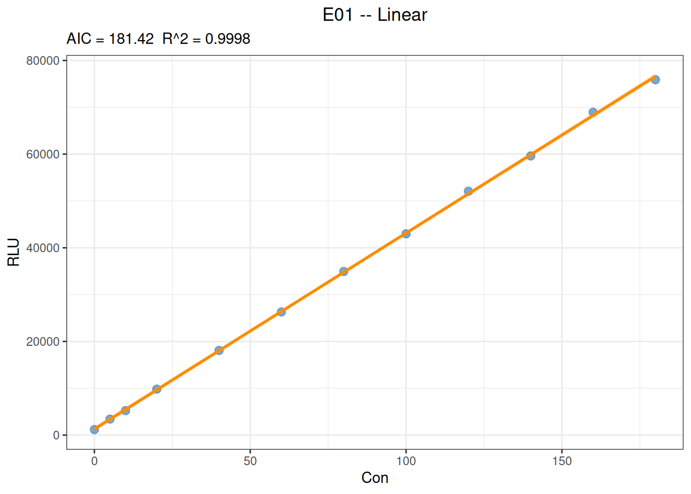
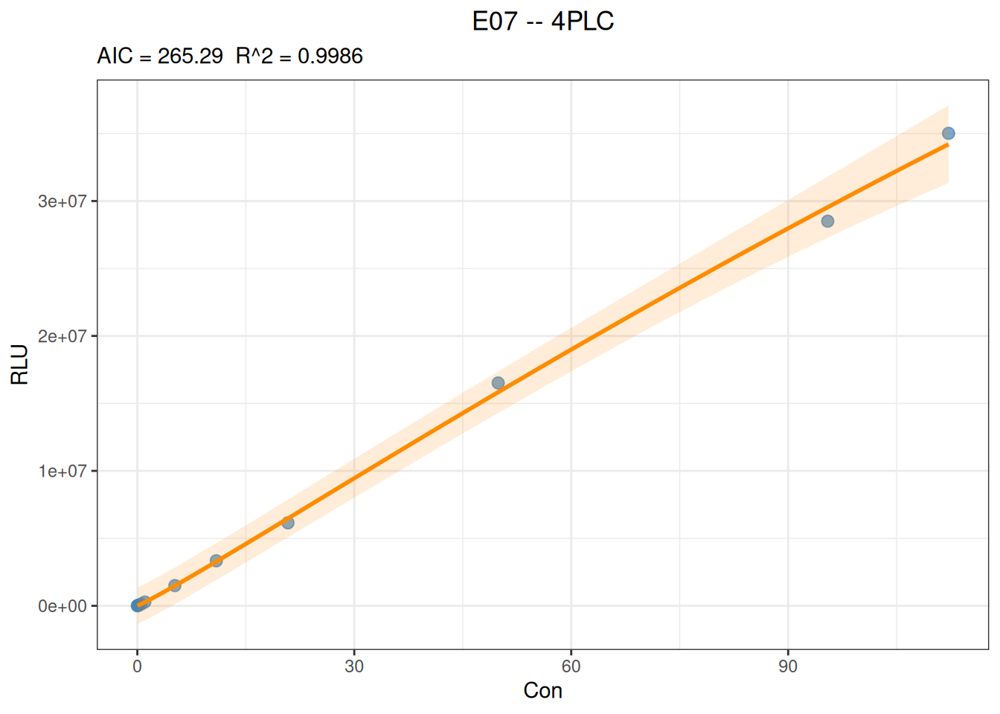

代码
library(ivdtools)
library(readr)本文演示如何使用 ivdtools 包的 fit_equation() 拟合校准曲线，并检查收敛状态、残差、权重影响以及正向和逆向预测。底层调用 minpack.lm、 nloptr、nls2、stats。
library(ivdtools)
library(readr)| 函数 | 用途 |
|---|---|
list_equation() |
查看内置方程注册表 |
replicate_to_mean() |
汇总重复测量并可计算权重 |
fit_equation() |
拟合内置或自定义方程 |
coef() |
提取模型参数 |
residuals() |
提取观测值减拟合值的残差 |
predict() |
正向预测响应值或逆向估计浓度 |
plot() |
绘制观测点、拟合曲线和区间 |
compare_equation() |
比较候选方程 |
list_equation()list_equation() ID Name Formula Params nP Engine
-----------------------------------------------------------------------
E01 Linear a + b*x a, b 2 lm
E02 Quadratic a + b*x + c*x^2 a, b, c 3 lm
E03 ExpoGrowth a * exp(b * x) a, b 2 nls
E04 ExpoDecay a * exp(-b * x) a, b 2 nls
E05 Power a * x^b a, b 2 nls
E06 Log a + b * log(x) a, b 2 lm
E07 4PLC A + (B - A) / (1 + (x / C)^D) A, B, C, D 4 nls
E08 5PLC A + (B - A) / (1 + (x / C)^D)^E A, B, C, D, E 5 nls
E09 Gaussian a * exp(-(x - b)^2 / (2 * c^2)) a, b, c 3 nls
E10 Michaelis Vmax * x / (Km + x) Vmax, Km 2 nls
E11 Sinusoidal a * sin(b * x + c) + d a, b, c, d 4 nls
E12 Cubic a + b*x + c*x^2 + d*x^3 a, b, c, d 4 lm 返回注册表数据框，包含方程 ID、名称、公式、参数数量、适用类别和拟合引擎。
replicate_to_mean()如果每个浓度包含重复测量，可以直接拟合全部观测，也可以先使用 replicate_to_mean() 汇总。
replicate_to_mean(
data, x = "Con", y = "RLU", weights = NULL, na.rm = TRUE
)函数按 x 分组，返回每个浓度的均值、重复数和离散程度等汇总字段；weights 可提供数值权重或用于后续拟合的权重规则。na.rm = TRUE 会排除缺失行，应同时记录排除数。汇总均值适合描述每个水平，不能默认等同于未来单次样本的误差模型。
fit_equation()fit_equation() 接受普通 data.frame。x 是浓度或相对浓度，y 是仪器响应；两列必须为有限数值。
fit_equation() 可以使用自动初值，也可以通过 start 指定初值；lower、upper 和 constraints 可设置参数边界或约束。weights 接受数值向量或内置方案 "equal"、"1/y"、"1/y^2"、"1/x"、"1/x^2"。
fit_equation(
eq, data, x = "x", y = "y", start = NULL,
lower = NULL, upper = NULL, constraints = NULL,
weights = NULL, ...
)返回 S3 类 fit_equation。对象包含选定方程、拟合模型、参数、数据和拟合诊断。
compare_equation()主要输入参数
compare_equation(
data, x = "Con", y = "RLU", eqs = c("4PLC", "5PLC")
)返回 S3 类 compare_equation，其中 $table 按 AIC 排序，至少包括 Eq、Name、Formula、nPar、AIC、deltaAIC、R2 和 RSE。AIC 只是候选模型比较证据，不能取代残差、平台、报告范围和外部验证。若候选模型在方案中未预设，应将比较结果标为探索性。
coef() residuals()coef(fit)
residuals(fit)fit 为 fit_equation() 返回的拟合对象。coef(fit) 返回带参数名的拟合系数向量；residuals(fit) 返回与有效观测行对应的观测值减拟合值残差向量。
predict()predict(
fit,
newdata,
interval = "confidence",
level = 0.95,
inverse = TRUE
)newdata 待预测的浓度或响应数据。interval、level 区间类型和置信水平，均值置信区间描述拟合均值的不确定性；预测区间还包含单次观测误差，通常更宽。。inverse 是否由响应值逆向估计浓度。
返回包含输入值、点预测以及按 interval 请求的上下界的数据框；逆向预测时点预测为估计浓度。
应避免超出校准浓度范围外推。逆向预测在平台区对响应误差非常敏感，非单调模型还可能出现多解。
plot()plot(fit, interval = "confidence", level = 0.95)图形用于检查观测点、拟合曲线、区间和校准范围。正式报告应保存方程、权重、区间类型、参数、收敛状态和绘图参数。
线性方程（Linear）适用于在整个工作范围内，响应值随浓度以近似恒定速率变化的场景。该方程在 ivdtools 的注册表中对应 E01：
\[y = a + b x\]
其中，\(a\) 为截距，\(b\) 为斜率。本例使用一套确定性的教学数据，数据文件为 data/003-校准曲线拟合/Linear.csv，仅用于演示分析流程；正式校准应根据研究方案确定浓度范围、重复数、权重和接受标准。
# 读取线性数据文件
fit_linear_data <- read_csv(
"./data/003-校准曲线拟合/Linear.csv",
show_col_types = FALSE
)
# 浏览数据结构
head(fit_linear_data, 6)# A tibble: 6 × 3
Sample Con RLU
<chr> <dbl> <dbl>
1 c1 0 1185
2 c2 5 3415
3 c3 10 5230
4 c4 20 9810
5 c5 40 18080
6 c6 60 26290# 拟合线性校准曲线
fit_linear <- fit_equation(
"E01",
data = fit_linear_data,
x = "Con",
y = "RLU"
)
# 显示拟合结果和参数
print(fit_linear)E01 (Linear)
Formula: a + b*x
Call:
stats::lm(formula = frm, data = d, weights = weights)
Residuals:
Min 1Q Median 3Q Max
-736.970 -185.656 -38.780 151.657 693.530
Coefficients:
Estimate Std. Error t value Pr(>|t|)
a 1292.468 183.32973 7.04996 3.4988e-05 ***
b 418.525 1.87989 222.63236 < 2.22e-16 ***
---
Signif. codes: 0 '***' 0.001 '**' 0.01 '*' 0.05 '.' 0.1 ' ' 1
Residual standard error: 395.923 on 10 degrees of freedom
Multiple R-squared: 0.9998, Adjusted R-squared: 0.9998
F-statistic: 49565.2 on 1 and 10 DF, p-value: <2e-16coef(fit_linear) a b
1292.468 418.525 # 绘制观测点、拟合直线和95%均值置信区间
plot(fit_linear, interval = "confidence", level = 0.99)
# 由浓度预测响应值
predict(
fit_linear,
newdata = data.frame(Con = c(25, 75, 150)),
interval = "confidence",
level = 0.95
) x y y_ci_lwr y_ci_upr
25 11755.59 11422.52 12088.66
75 32681.84 32427.13 32936.56
150 64071.22 63670.87 64471.57# 由响应值逆向估计浓度
predict(
fit_linear,
newdata = data.frame(RLU = c(10000, 30000, 60000)),
inverse = TRUE
) x y
20.80529 10000
68.59215 30000
140.27246 60000线性拟合的斜率表示响应随浓度的平均变化速率，截距表示浓度为 0 时的估计响应。应结合残差是否存在趋势、拟合区间、回算偏差以及预先规定的接受标准判断线性模型是否适用；不能仅依据 \(R^2\) 较高就确认校准范围内完全线性。逆向预测应限制在实际校准浓度范围内，避免无依据外推。
四参数 Logistic （four-parameter logistic，4PLC）是非线性模型。
\[y = A + \frac{B-A}{1 + (x/C)^D}\]
其中，\(A\) 和 \(B\) 表示两个渐近平台，\(C\) 表示曲线中点对应的浓度尺度，\(D\) 控制曲线方向和陡峭程度。参数含义应结合实际信号方向解释。
# 读取数据文件
fit_4plc_data <- read_csv("./data/003-校准曲线拟合/4PLC.csv", show_col_types = FALSE)
# 浏览数据结构
head(fit_4plc_data, 6)# A tibble: 6 × 3
Sample Con RLU
<chr> <dbl> <dbl>
1 c1 0 5637
2 c2 0.05 16014
3 c3 0.2 47520
4 c4 0.51 125038
5 c5 1.03 277621
6 c6 5.19 1498023# 拟合4PLC曲线，权重选择 "1/y^2"
fit_4plc <- fit_equation(
"4PLC",
data = fit_4plc_data,
x = "Con",
y = "RLU",
weights = "1/y^2"
)
# 显示拟合结果
print(fit_4plc)E07 (4PLC)
Formula: A + (B - A) / (1 + (x / C)^D)
Call:
fit_equation(eq = "4PLC", data = fit_4plc_data, x = "Con", y = "RLU",
weights = "1/y^2")
Residuals:
Min 1Q Median 3Q Max
-1038926.254 -2031.562 491.283 35707.649 809345.965
Coefficients:
Estimate Std. Error t value Pr(>|t|)
A 5.66828e+03 2.30614e+02 24.57907 4.7016e-08 ***
B 2.00185e+08 6.72603e+07 2.97627 0.020624 *
C 4.83741e+02 1.74222e+02 2.77658 0.027433 *
D -1.08082e+00 1.02400e-02 -105.54858 1.8062e-12 ***
---
Signif. codes: 0 '***' 0.001 '**' 0.01 '*' 0.05 '.' 0.1 ' ' 1
Residual standard error: 0.042025 on 7 degrees of freedom
AIC: 265.29 Iterations: 7# 获取拟合残差
residuals(fit_4plc) [1] -3.128012e+01 4.912832e+02 -2.231827e+03 -1.831297e+03 1.304427e+04
[6] 1.466392e+04 5.675138e+04 -3.256634e+05 6.828909e+05 -1.038926e+06
[11] 8.093460e+05# 绘制图形
plot(fit_4plc, interval = "prediction", level = 0.95)
# 由x预测y
predict(
fit_4plc,
newdata = data.frame(Con = c(20, 200, 1000)),
) x y
20 6205093
200 55646993
1000 137475699# 由y预测x
predict(
fit_4plc,
newdata = data.frame(RLU = c(10000, 100000, 1000000)),
inverse = TRUE
) x y
0.023371 1e+04
0.404396 1e+05
3.589256 1e+06以下案例复用前面的线性数据，重点展示 fit_equation() 中参数约束的写法。
当理论上浓度为 0 时响应应为 0，或方案明确要求不估计截距时，可以将线性模型的截距参数 \(a\) 固定为 0：
fit_linear_zero <- fit_equation(
"E01",
data = fit_linear_data,
x = "Con",
y = "RLU",
constraints = list(eq = function(p) p["a"])
)
print(fit_linear_zero)E01 (Linear)
Formula: a + b*x
Call:
fit_equation(eq = "E01", data = fit_linear_data, x = "Con", y = "RLU",
constraints = list(eq = function(p) p["a"]))
Residuals:
Min 1Q Median 3Q Max
-1309.733 268.826 616.260 1002.094 1270.563
Coefficients:
Estimate Std. Error t value Pr(>|t|)
a 0.000000 447.987279 0.000 1
b 428.887404 4.594117 93.356 9.41e-15 ***
---
Signif. codes: 0 '***' 0.001 '**' 0.01 '*' 0.05 '.' 0.1 ' ' 1
Residual standard error: 1019.73 on 9 degrees of freedom
AIC: 166.80, R^2: 0.9988
Convergence: 4 (NLOPT_XTOL_REACHED: Optimization stopped because xtol_rel or xtol_abs (above) was reached.)